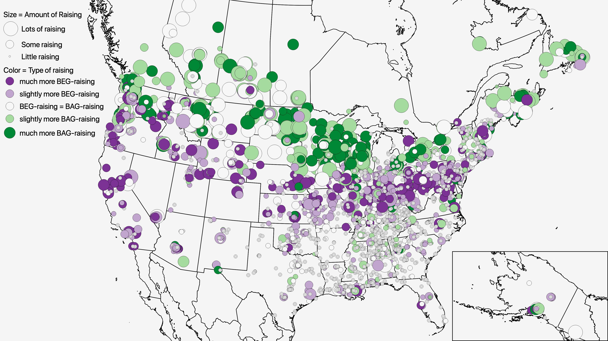

Thanks for attending my presentations. At the 2019 annual meetings of the American Dialect Society and the Linguistic Society of America in New York City, I was fortunate to present three presentations!
Thursday’s LSA poster on southern vowels
Download the poster here!
Thursday, Peggy Renwick and I presented our poster on social patterns in static and dynamic measurements of Southern American English vowels. Our dataset was the Digital Archive of Southern Speech (DASS), a collection of 64 interviews from the 1970s. We looked at Pillai scores to measure the degree of “swapping” between pairs of front vowels (/i ɪ/ and /e ɛ/) and we used vector length, trajectory length, and spectral rate of change to see how dynamic the vowels were.
We found a bunch of cool patterns! You can see the poster for all of them, but one of the cooler ones was that /e/ and /ɛ/ swapped more in younger speakers. This plot shows the trajectories of these two vowels split up by generation and you can see how they get closer together (though keep in mind that because the trajectories are drastically different, these aren’t merging).

This is to be expected for speakers with the Southern Vowel Shift. But, the African American Vowel Shift doesn’t have this same swapping. So sure enough, if we look at the data split by ethnicity, we see that the African American speakers had less speakers than the European Americans.
So our results are mostly what we expected to find. But this corpus of older recordings give us a unique peek into the past while these changes were developing. And by using both static and dynamic measurements, we can get a more complete picture of what’s going on.
Friday’s ADS presentation on prevelar raising
Download the slides here!
Early Friday morning, I talked about regional patterns in
I used the same dataset that I used for my NWAV47 presentation: I set up an online survey and asked people how they pronounced several dozen prevelar words. For geographic data, I used GPS coordinates of people’s childhood homes. I ended up with over 500,000 data points!
It was clear that there were differences between the two vowels.
And then I showed some plots. The first was

But then other map showed that

When you combine the two maps, you can start to see where one occurs without the other. Here, green areas are those that have

Basically, the purpose of this study was to see whether there were differences between
Sunday’s ADS presentation on the perception of Southern American English
Download the slides here!
My last presentation of the weekend was Sunday morning at the American Dialect Society. On behalf of my coauthors, Rachel Olsen, Mike Olsen, Lisa Lipani, and Peggy Renwick, I talked about our research on comparing acoustic data with fieldworker transcriptions in the Digital Archive of Southern Speech. Doing this kind of comparison is not new, and people have found that Linguistic Atlas transcriptions are not really that reliable, but we wanted to look into this for ourselves in our newly transcribed corpus.
So for now, we’re just focusing on the canonical diphthongs /aɪ, aʊ, ɔɪ/ because they’re quite a bit more monophthongal in the South than in other areas. To measure this acoustically, we used trajectory length. For the perception, we looked at the original fieldworker’s protocols they created for each informant, which has example tokens and how those people would pronounce them (in IPA).
Basically there was no correlation between how monophthongal the vowels were acoustically and how they were transcribed. Besides that, in transcriptions the vowels were more monophthongal when they were before /r/, but acoustically they were more monophthongal before /l/ and among European Americans. The two give different results.
So we’ve at least found that whatever the fieldworkers heard when they transcribed these words, it wasn’t trajectory length. Perhaps in the future we can explore some other acoustic measures and see if they correlate better with the transcriptions.